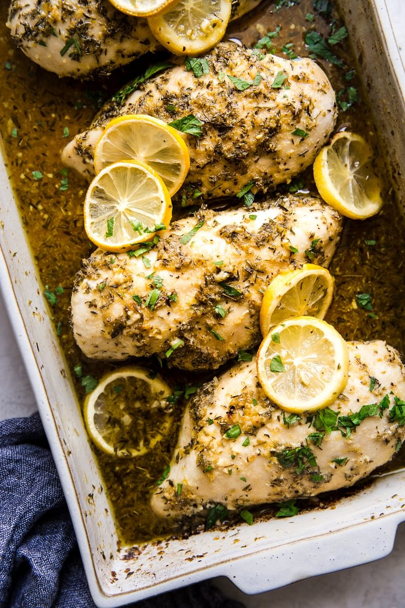

How To Make Lemon Chicken

Our easy, baked lemon chicken recipe is healthy, fast, and so, so delicious. The key is coating the lemon chicken with lots of moisture-giving things, and watching that internal temp closely so that you don’t over-bake the chicken.
- Make a lemon chicken marinade. Well, it’s really more like a rub or a paste, because our lemon chicken recipe requires no actual marinating (yay!). But basically, we coat the chicken breasts in a thick, olive oil-based herb paste flavored with oregano, thyme, garlic powder, salt and pepper.
- Make the lemon chicken sauce! Stir together all of the zingy things—white wine, fresh garlic, lemon zest, lemon juice—to make the sauce that the chicken breasts will bake in. You’ll also use this sauce to baste the chicken as it bakes, ensuring that these bright flavors have a chance to be absorbed by the chicken (without having to actually marinate the chicken).
- Bake! Until you get that internal temperature reading of 165°F. Then it’s time to dig in!